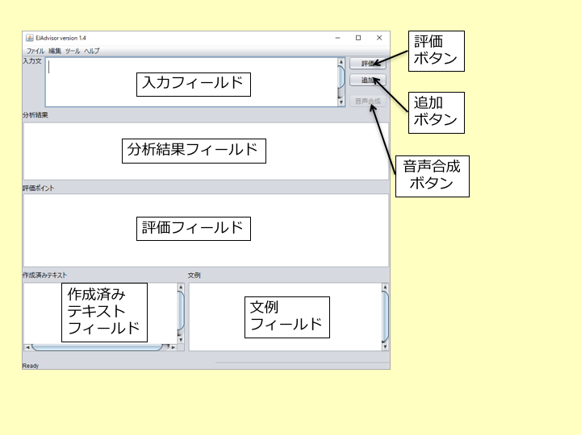
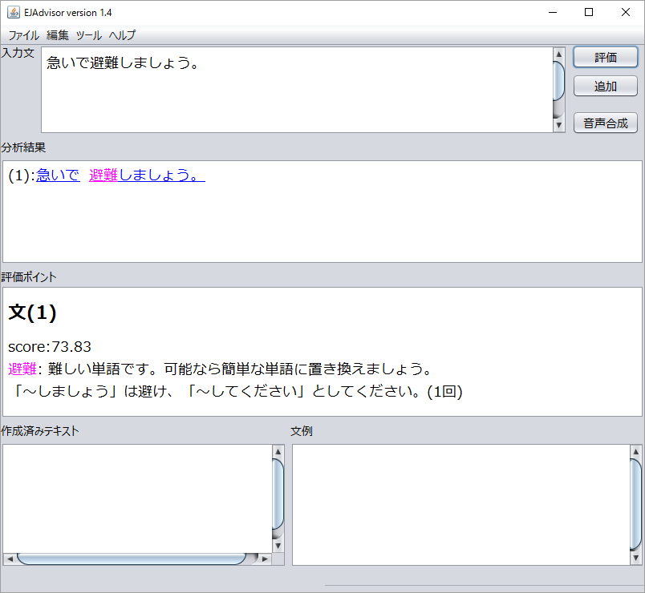
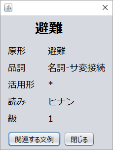
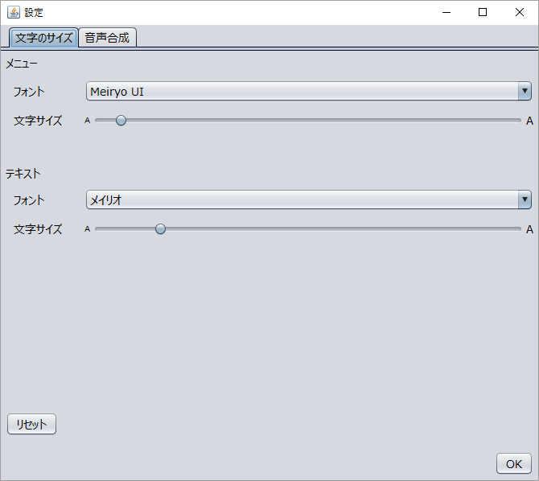
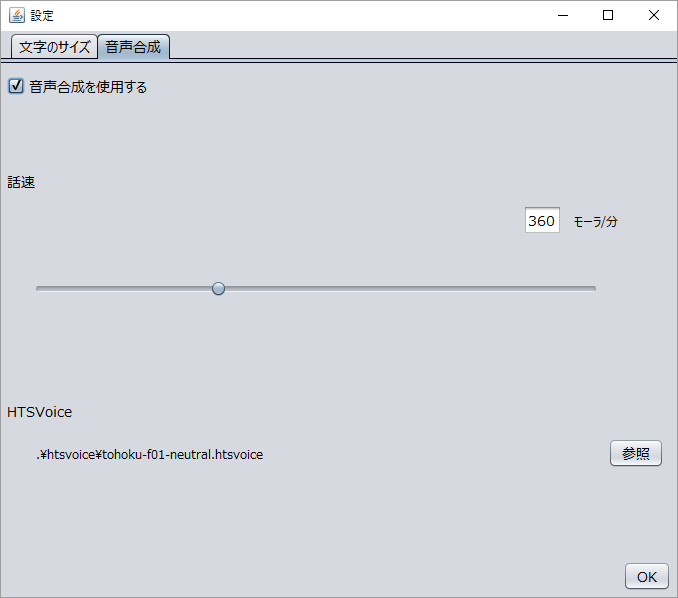

やんしすの画面を以下に示します。

作成したい文を入力フィールドに入力し、評価ボタンを押します。すると、やんしすが入力文を評価した結果が分析結果フィールドに表示されます。また、それぞれの文に対する評価ポイントが評価フィールドに表示されます。

分析結果フィールドでは、入力文ごとに評価結果が色で示されます。ピンクが｢やや難しい単語」（日本語能力検定１・２級レベル）、赤が「難しい単語｣（日本語能力検定語彙外）を示しています。score は、その文を海外の人が読んだ時にどれくらい理解できるかを推定した結果です。scoreは100点満点で表され、scoreが高いほど「理解されやすい」ことを表しています。分析結果フィールドの中の単語をクリックすると、その単語の情報が表示されます。ここでは、単語の原形、品詞（IPAdicの分類による）、活用形、読み、日本語能力検定の級が表示されます。

ここで開いたダイアログにある「関連する文例｣ボタンをクリックすると、現在表示している単語に関連した文例が「文例フィールド」に表示されます。
評価結果と関連する文例の情報に基づき、入力フィールドの内容を手で修正します。修正と評価を繰り返し、作成者が「これでよい｣と判断したら、追加ボタンを押します。すると、入力フィールドの内容が作成済みテキストフィールドの最後に追加され、その他のフィールドはクリアされます。作成済みテキストフィールドの内容は、[ファイル]メニューの[名前をつけて保存]で保存することができます。
メニューの[ツール]→[設定]→[文字のサイズ]で文字の大きさを変えることができます。
メニューの[ツール]→[設定]→[音声合成]で「音声合成を使用する」にチェックを入れると音声合成が使用できます。
話速のところにあるスライダーを動かすと話す速さを変えて音声を合成することができます。値を大きくすると速さが早くなります。
HTSVoiceを変更すると、合成に使用する音声を変えることができます。参照を押して.htsvoiceファイルを選択してください。合成される音声の品質は.htsvoiceファイルによります。
音声合成を使用する手順は以下の通りです。
合成した音声は、[ファイル]→[Save WAV]でWAVファイルとして保存できます。